💅
01
Acrílico
Extensiones resistentes con la forma que sueñas: almendra, cuadrada, coffin o stiletto.
Diseños hechos a mano, con paciencia y detalle. Francés delicado, líneas doradas, stilettos con carácter: lo que imagines, en tus manos.
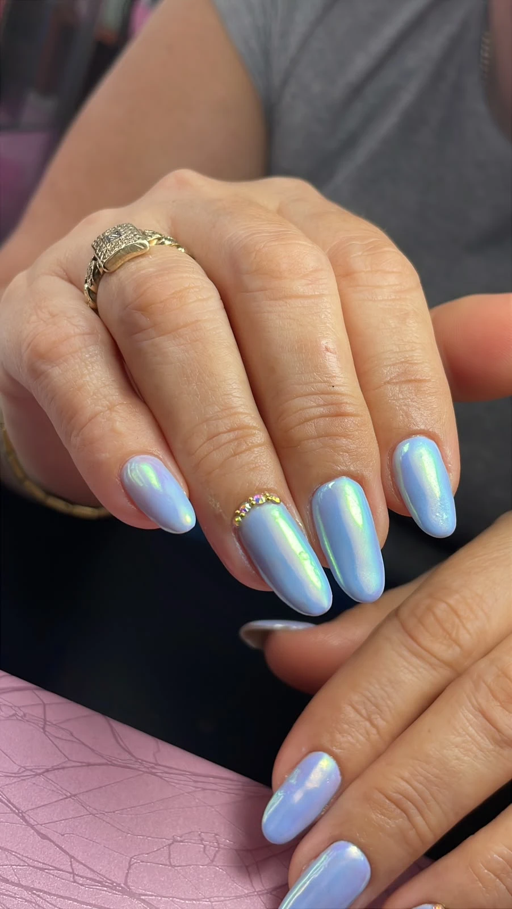
Siete técnicas, un solo estilo: el tuyo.Desde extensiones en acrílico hasta la nivelación de tu uña natural.
Cada técnica tiene su momento. Si no sabes cuál elegir, escríbeme: miramos juntas tu uña natural y lo que quieres lograr.
Extensiones resistentes con la forma que sueñas: almendra, cuadrada, coffin o stiletto.
Lo mejor del gel y el acrílico en uno: liviano, flexible y con un acabado muy natural.
Base flexible que nivela y refuerza tu uña natural para que crezca fuerte y bonita.
Tips de gel suave para un largo instantáneo, cómodo y ligero, listo para decorar como quieras.

Una capa de gel sobre tu uña natural: más brillo, más grosor y más protección.
Color intenso y brillo de espejo, con secado inmediato en lámpara.
Corrige la superficie de tu uña para un acabado liso, parejo y elegante.
Cada set empieza con una conversación: tu estilo, tu ritmo, tus manos. Después viene el *detalle — una línea *dorada, un francés ~perfecto, un brillo que se queda contigo.
Algunos sets recientes. Hay muchos más en Instagram y TikTok.
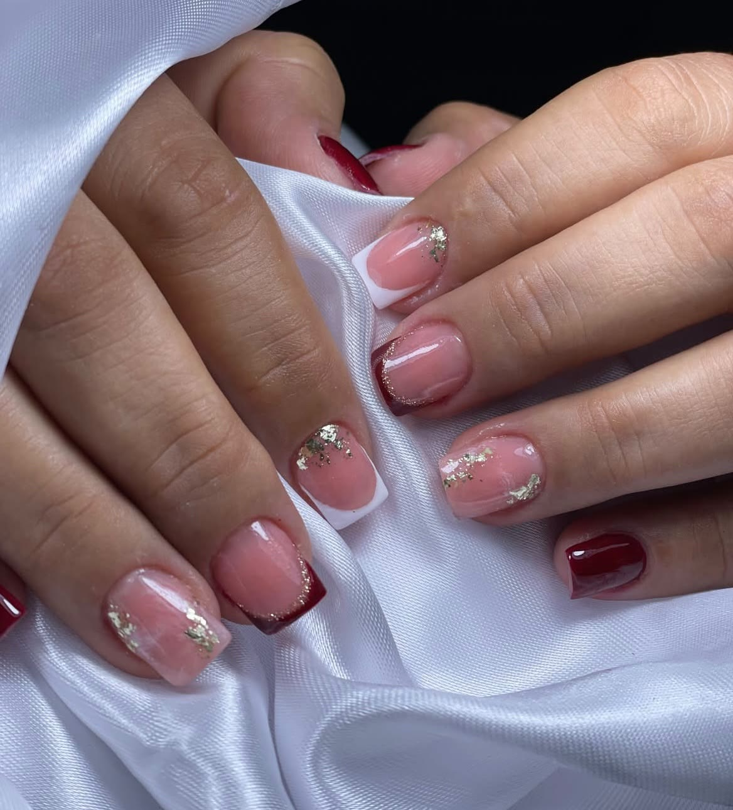
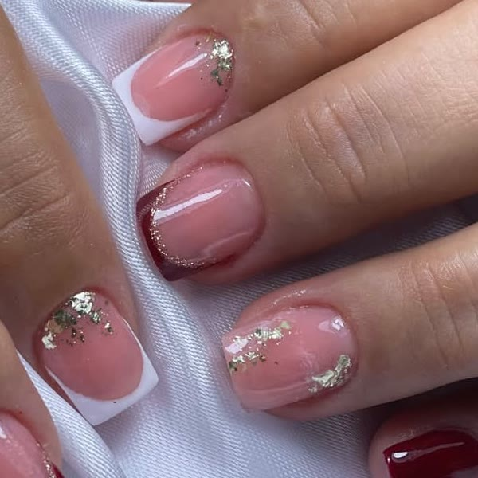


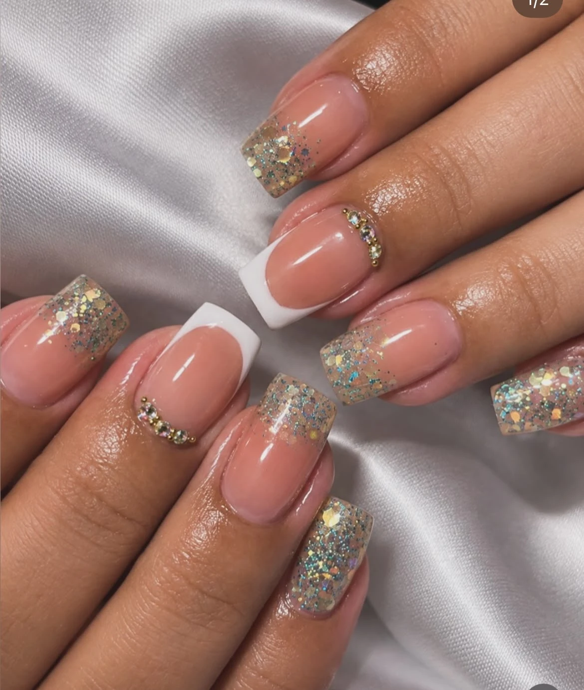
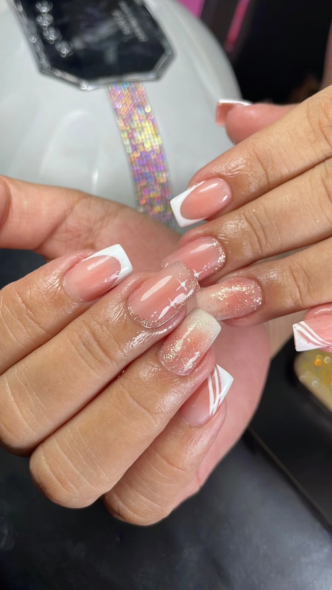
Tendencias que nos encantan. Guarda la que te guste, tráela a tu cita y la adaptamos a tu forma y largo de uña.
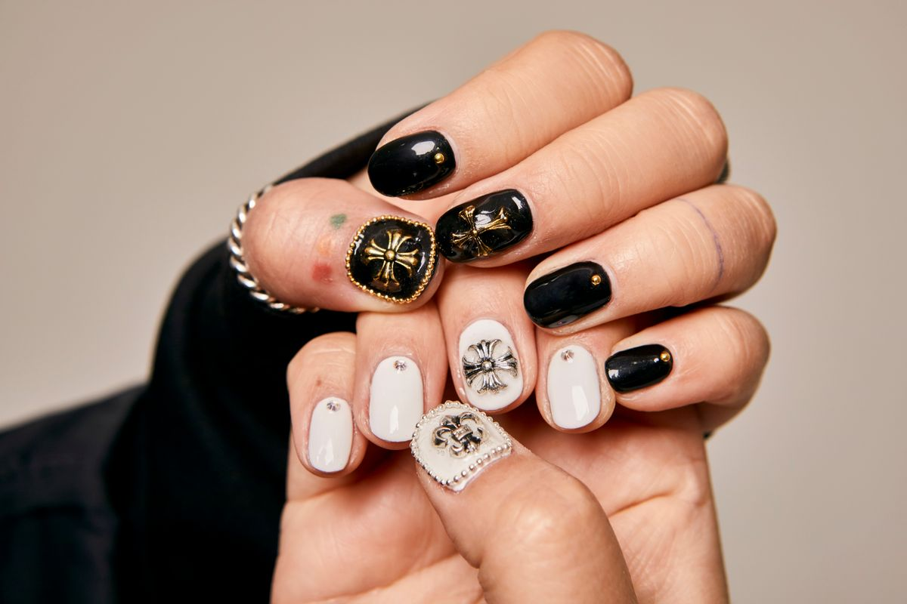
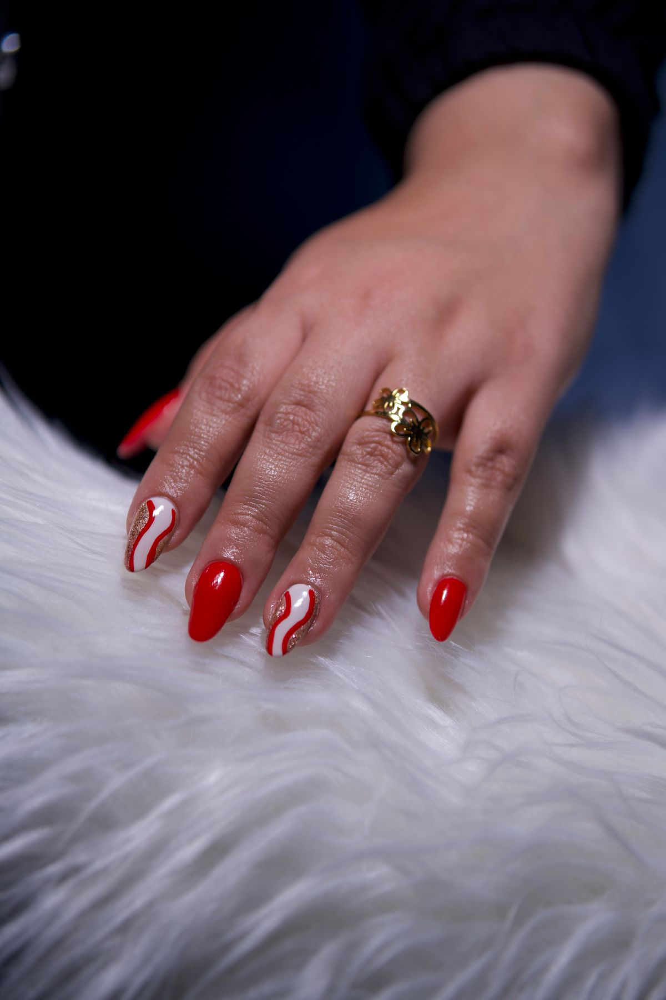
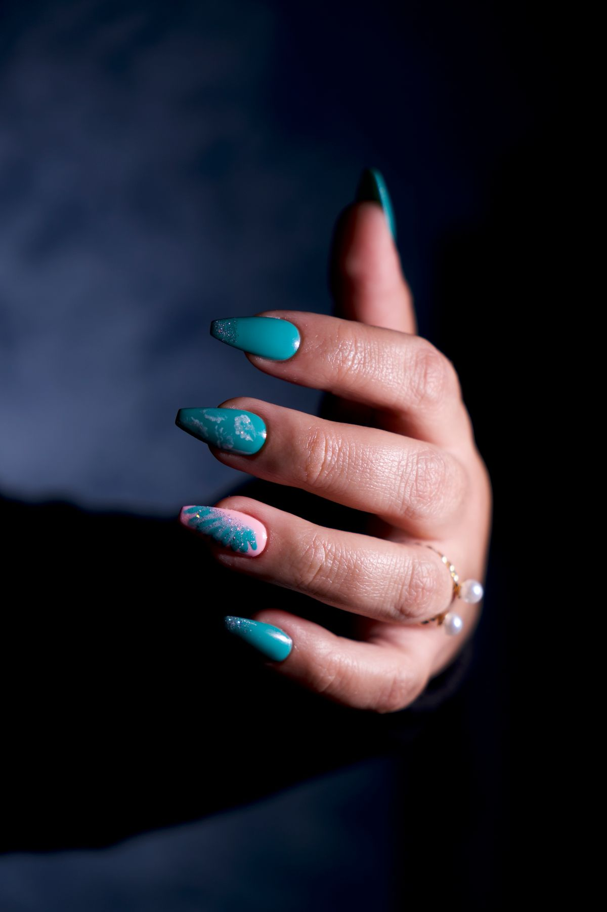
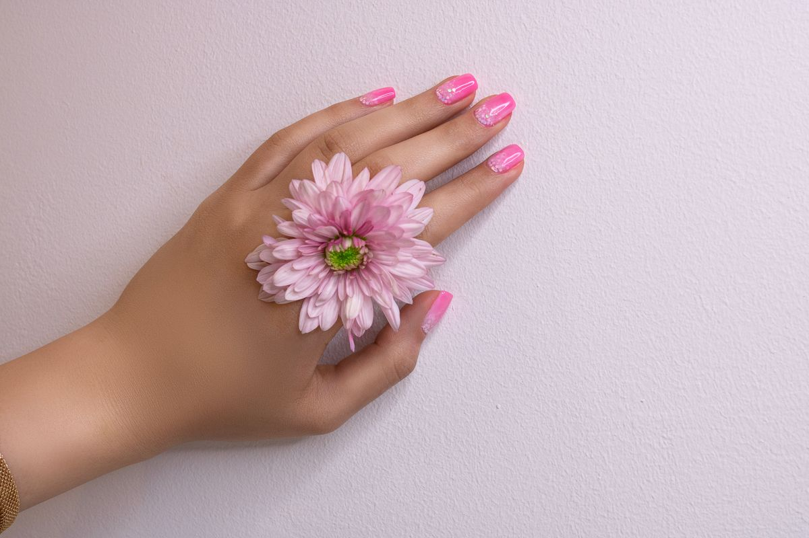
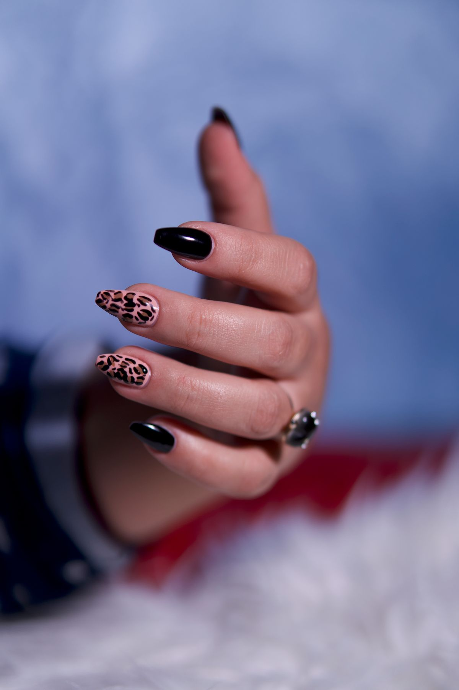
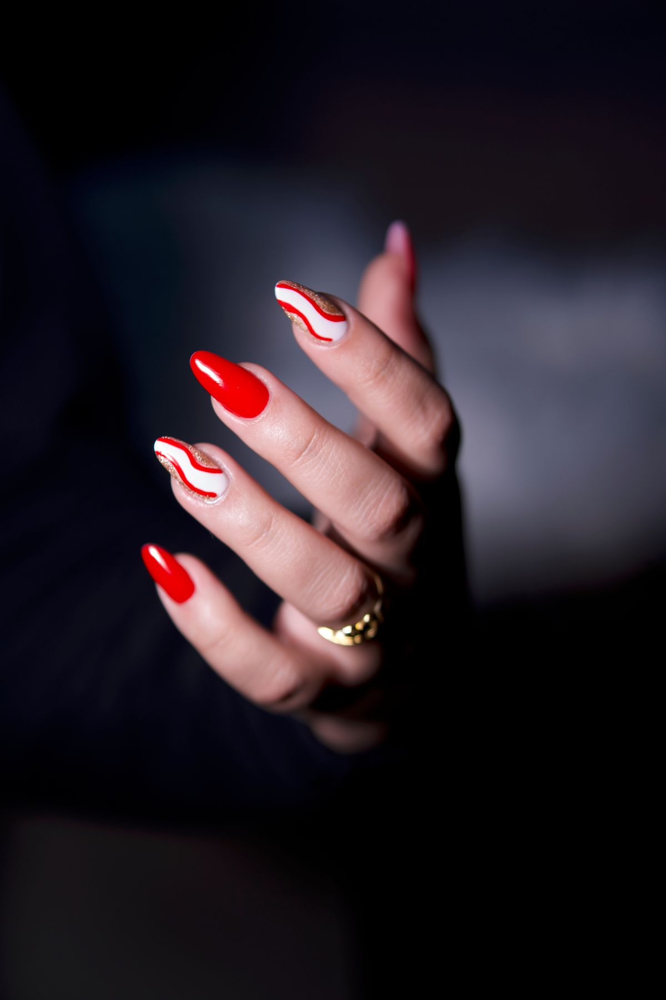
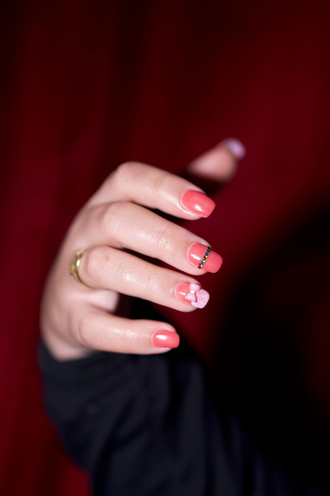
Fotos de referencia de Pexels, no son trabajos de Katy. Sus trabajos están en Hecho a mano e Instagram.
Sin complicaciones: me escribes, elegimos juntas y tú solo te relajas.
Mándame un mensaje por Instagram o TikTok con el servicio que te interesa y te respondo con la disponibilidad.
Comparte tu inspiración: colores, forma, largo. Te ayudo a escoger la técnica que mejor va con tu uña natural.
Preparación cuidadosa de la uña, aplicación de la técnica y el diseño a mano, detalle por detalle.
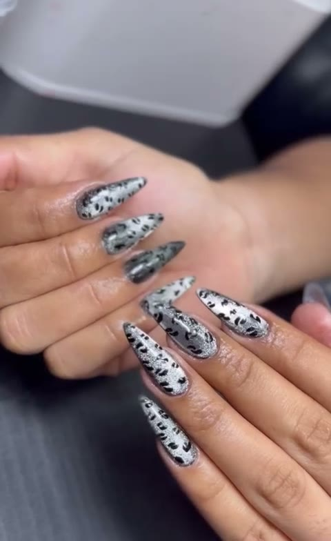
Aceite de cutícula a diario, guantes para limpiar y nada de usarlas como herramienta. Así tu set se ve bonito por más tiempo.